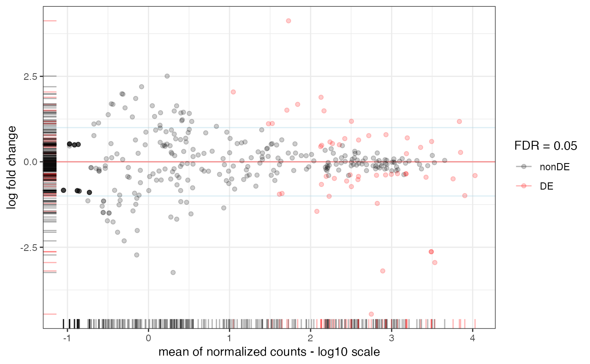
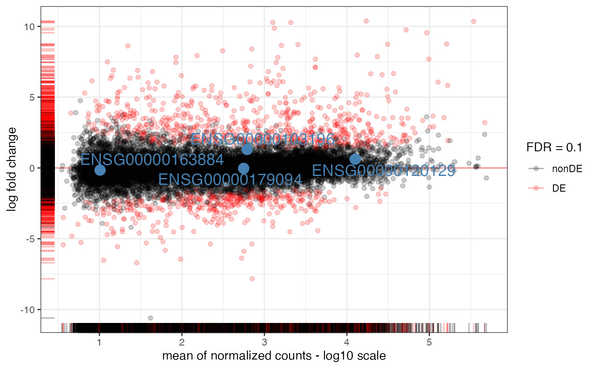

MA-plot from base means and log fold changes, in the ggplot2 framework, with additional support to annotate genes if provided.
Usage
plot_ma(
res_de,
FDR = 0.05,
point_alpha = 0.2,
sig_color = "red",
annotation_obj = NULL,
draw_y0 = TRUE,
hlines = NULL,
title = NULL,
xlab = "mean of normalized counts - log10 scale",
ylim = NULL,
add_rug = TRUE,
intgenes = NULL,
intgenes_color = "steelblue",
labels_intgenes = TRUE,
labels_repel = TRUE
)Arguments
- res_de
A
DESeqResultsobject- FDR
Numeric value, the significance level for thresholding adjusted p-values
- point_alpha
Alpha transparency value for the points (0 = transparent, 1 = opaque)
- sig_color
Color to use to mark differentially expressed genes. Defaults to red
- annotation_obj
A
data.frameobject, with row.names as gene identifiers (e.g. ENSEMBL ids) and a column,gene_name, containing e.g. HGNC-based gene symbols. Optional- draw_y0
Logical, whether to draw the horizontal line at y=0. Defaults to TRUE.
- hlines
The y coordinate (in absolute value) where to draw horizontal lines, optional
- title
A title for the plot, optional
- xlab
X axis label, defaults to "mean of normalized counts - log10 scale"
- ylim
Vector of two numeric values, Y axis limits to restrict the view
- add_rug
Logical, whether to add rug plots in the margins
- intgenes
Vector of genes of interest. Gene symbols if a
symbolcolumn is provided inres_de, or else the identifiers specified in the row names- intgenes_color
The color to use to mark the genes on the main plot.
- labels_intgenes
Logical, whether to add the gene identifiers/names close to the marked plots
- labels_repel
Logical, whether to use
geom_text_repelfor placing the labels on the features to mark
Details
The genes of interest are to be provided as gene symbols if a symbol
column is provided in res_de, or else by using the identifiers specified
in the row names
Examples
data(res_de_macrophage, package = "mosdef")
plot_ma(res_macrophage_IFNg_vs_naive, FDR = 0.05, hlines = 1)

plot_ma(res_macrophage_IFNg_vs_naive,
FDR = 0.1,
intgenes = c(
"ENSG00000103196", # CRISPLD2
"ENSG00000120129", # DUSP1
"ENSG00000163884", # KLF15
"ENSG00000179094" # PER1
)
)
#> Warning: Direct call of 'as.data.frame.numeric()' is deprecated. Use 'as.data.frame.vector()' or 'as.data.frame()' instead
#> Warning: Direct call of 'as.data.frame.numeric()' is deprecated. Use 'as.data.frame.vector()' or 'as.data.frame()' instead
#> Warning: Direct call of 'as.data.frame.numeric()' is deprecated. Use 'as.data.frame.vector()' or 'as.data.frame()' instead
#> Warning: Direct call of 'as.data.frame.numeric()' is deprecated. Use 'as.data.frame.vector()' or 'as.data.frame()' instead
#> Warning: Direct call of 'as.data.frame.numeric()' is deprecated. Use 'as.data.frame.vector()' or 'as.data.frame()' instead
#> Warning: Direct call of 'as.data.frame.numeric()' is deprecated. Use 'as.data.frame.vector()' or 'as.data.frame()' instead
